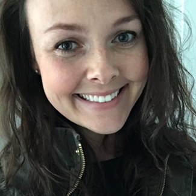

About Me
For the past 8 years, I’ve been working in digital marketing, branding, and design. In my various roles, I’ve provided support for digital strategies and customer experience driven initiatives, including two website redesigns, launching an e-commerce site, and an online account management platform. I’ve always had an interest in coding since I took ‘Intro to IT’ during undergrad. I'm currently learning full stack web development and hope to combine my passion for marketing with the technical skills to build impactful customer-facing solutions.
Outside of work, I enjoy traveling (mostly to the Caribbean), going to the beach or lounging by the pool, shopping, interior decorating, photography, and spending time with family. I’m a lifelong Mainer living just of outside Portland with my husband and two chocolate labs, Sully & Salem!